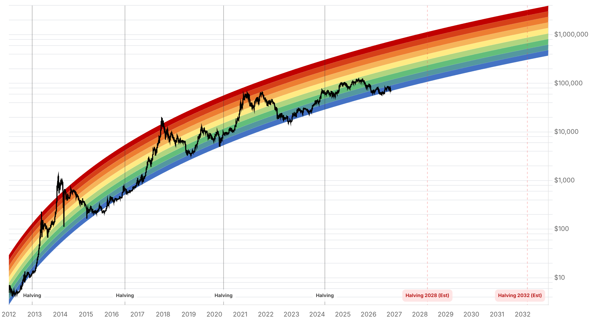

Reporte financiero
BTC cotiza en vivo a USD 67.338,10 (07:14 UTC), -1,32% vs. el cierre previo de USD 68.238,21 -extendiendo la caída de ayer: desde el precio en vivo de ayer (USD 69.006,82) acumula otro -2,4% hoy, y en la semana el precio cayó de USD 74.584,65 (8-nov) a USD 67.338,10 (hoy), un -9,7% acumulado. El Fear & Greed Index cayó aún más, de 20 ('Extreme Fear') ayer a 13 hoy, el nivel más bajo registrado en este seguimiento diario. La novedad principal desde el reporte de ayer es ajena al mercado cripto pero con fuerte efecto de contagio: Jensen Huang renunció como CEO y director de Nvidia el 12 de noviembre, en medio de reportes sobre denuncias de infidelidad (incluida una segunda y luego una tercera denuncia reportada por Reuters), con la directora financiera Colette Kress asumiendo como CEO interina. La acción de Nvidia cerró el 12-nov con una caída de 4,34% (había llegado a caer ~14-15% intradía) y cayó otro -2,01% el 13-nov, perdiendo por primera vez desde julio de 2025 el umbral de USD 4 billones (trillion) de capitalización de mercado -una fuente cita una caída acumulada de 22,2% en 10 sesiones tras la renuncia-, con al menos diez analistas bajando su recomendación de 'comprar' a 'mantener'. Esto resuelve el punto que quedaba pendiente en reportes anteriores (el plazo vencido del 11-nov para que Huang respondiera a los comités de la Cámara) y añade un nuevo canal de contagio de risk-off hacia activos de riesgo, incluido bitcoin, más allá del desapalancamiento cripto-específico ya reportado ayer. También se resolvió la otra incógnita pendiente de ayer: el dato de PPI de octubre en EE.UU. se publicó el 13-nov a las 8:30am ET con resultado mixto -el componente mensual sorprendió a la baja (+0,3% vs. +0,4% esperado) pero el componente anual sorprendió al alza (+6,5% interanual, el más alto desde noviembre de 2022); el núcleo (core) subió 0,3% mensual (en línea con lo esperado) y 5,0% interanual. Pese a la lectura mensual más fría, el mercado mantiene una probabilidad alta de alza de tasas de la Fed el 9 de diciembre: la herramienta CME FedWatch mostraba 89,7% de probabilidad de un alza de 25 puntos básicos y 10,3% de un alza de 50 puntos básicos (no hay expectativa de recorte en este ciclo). Sobre los flujos de ETFs de bitcoin: no se encontró una actualización verificada posterior al 11 de noviembre (dato ya reportado ayer, -USD 299,9M esa sesión) -tftc.io, la fuente habitual de este reporte, no había publicado los datos del 12 ni del 13 de noviembre al momento de esta consulta; se deja constancia del rezago de dato en vez de estimar o inventar una cifra. Una fuente secundaria (crypto.news) menciona además un reclamo de ataque de Irán a un radar de alerta temprana de EE.UU. en Baréin como parte del contexto de la caída, pero no se pudo corroborar de forma independiente para el 13 de noviembre -las búsquedas específicas sobre ese hecho solo devolvieron reportes similares fechados en junio-julio de 2026-, por lo que se omite de este reporte hasta poder verificarlo. No se encontraron opiniones de expertos nuevas y verificadas específicas sobre la caída de hoy o de ayer; la única cita disponible (Alex Thorn, Galaxy) ya fue usada en el reporte anterior y es anterior a la aceleración de la caída, por lo que no se repite aquí. Sin novedades verificadas desde ayer en: MSCI/Strategy (MSTR), Clarity Act, BTCPay Server, la apelación del Reino Unido sobre los 61.000 BTC, Cantor Fitzgerald y las negociaciones con Irán (más allá del reclamo no verificado ya mencionado).
Jensen Huang renunció como CEO y director de Nvidia el 12 de noviembre de 2026, en medio de reportes sobre denuncias de infidelidad -Reuters reportó una segunda, y luego circuló una tercera denuncia, involucrando a una empleada no identificada de la compañía-. Colette Kress, hasta entonces directora financiera, asumió como CEO interina. La acción de Nvidia llegó a caer ~14-15% intradía el 12-nov antes de recortar pérdidas y cerrar con -4,34%; al día siguiente (13-nov) cayó otro -2,01%, perdiendo por primera vez desde julio de 2025 el umbral de USD 4 billones de capitalización de mercado. Al menos diez analistas bajaron su recomendación de 'comprar' a 'mantener', y una nota de Yahoo Finance cita una caída acumulada de 22,2% en las primeras 10 sesiones tras la renuncia. Este evento resuelve el punto que quedaba pendiente en el reporte de ayer (el plazo vencido del 11-nov sin respuesta pública de Huang a los comités de la Cámara de Representantes) y añade un canal de contagio de sentimiento de riesgo hacia el sector tech/IA en general -y por extensión hacia bitcoin, que ya venía cayendo por motivos propios del mercado cripto-, más allá del desapalancamiento cripto-específico reportado ayer.
El Bureau of Labor Statistics publicó el 13 de noviembre a las 8:30am ET el Índice de Precios al Productor (PPI) de octubre: +0,3% mensual (por debajo del +0,4% esperado), pero +6,5% interanual -la lectura anual más alta desde noviembre de 2022-. El núcleo (core, excluye alimentos y energía) subió 0,3% mensual (en línea con lo esperado, tras +0,7% en septiembre) y 5,0% interanual. Pese al componente mensual más frío, la herramienta CME FedWatch mostraba hacia las 9:49am ET una probabilidad de 89,7% de un alza de tasas de 25 puntos básicos por parte de la Fed el 9 de diciembre, y 10,3% de un alza de 50 puntos básicos -no hay expectativa de recorte en el ciclo actual-. El dato alimenta además la estimación de PCE subyacente (la medida de inflación que la Fed sigue más de cerca), con una estimación citada de ~3,2%, frente a 3,1% previo. Esto resuelve el punto que quedaba pendiente en el reporte de ayer sobre la publicación de este dato.
El precio en vivo de BTC-USD (Yahoo Finance, 07:14 UTC) es de USD 67.338,10, -1,32% vs. el cierre previo de USD 68.238,21 -un nuevo tramo de baja tras el desplome ya reportado ayer (-3,31% el 13-nov vs. el 12-nov)-. En la semana, el precio bajó de USD 74.584,65 (8-nov) a USD 67.338,10 (hoy), una caída acumulada de ~9,7%. El mínimo intradía de hoy es USD 66.535,51, por debajo del nivel de referencia de USD 67.000 mencionado en reportes anteriores. El Fear & Greed Index cayó de 20 ('Extreme Fear') ayer a 13 hoy -el valor más bajo registrado en este seguimiento diario del proyecto, por debajo incluso del derrumbe ya marcado ayer-.
tftc.io, la fuente habitual de este reporte para flujos diarios de ETFs de bitcoin al contado, no había publicado los datos del 12 ni del 13 de noviembre al momento de esta consulta -el último dato disponible sigue siendo el de la sesión del 11-nov (-USD 299,9M netos), ya reportado en la edición de ayer-. Una búsqueda de prensa encontró una cifra de -USD 866,7M para el 13 de noviembre atribuida a datos de Farside/SoSoValue, pero no pudo confirmarse de forma independiente si corresponde a 2026 o es una confusión con un evento de noviembre de 2025 con la misma cifra -por lo que, siguiendo la regla de no inventar ni asumir datos no verificados, se omite de este reporte y se deja constancia del rezago.
No se encontró información nueva y verificada desde el reporte de ayer sobre MSTR/MSCI (se mantiene la exclusión de índices vigente al cierre del 30 de noviembre), la Clarity Act, la vulnerabilidad de BTCPay Server, la apelación del Reino Unido sobre los 61.000 BTC, ni Cantor Fitzgerald. Sobre Irán: una fuente secundaria (crypto.news, 13-nov) menciona como parte del contexto de la caída un reclamo de la Guardia Revolucionaria iraní de haber atacado un radar de alerta temprana de EE.UU. en Baréin, pero búsquedas dedicadas sobre ese hecho solo devolvieron reportes de ataques similares a radares en Baréin fechados en junio y julio de 2026 -no se encontró corroboración independiente de que haya ocurrido un hecho nuevo el 13 de noviembre-, por lo que se omite de este reporte hasta poder verificarlo con una fuente primaria o de mayor calidad.
| Periodo | Valor |
|---|---|
| 8 nov | 74584.65 |
| 9 nov | 75223.15 |
| 10 nov | 73720.12 |
| 11 nov | 73964.47 |
| 12 nov | 71342.97 |
| 13 nov | 68249.27 |
| 14 nov (en vivo) | 67338.1 |
| Periodo | Valor |
|---|---|
| Hoy | 13 |

El catalizador nuevo a vigilar es el contagio de la transición de liderazgo en Nvidia hacia el apetito de riesgo tech/IA en general -de extenderse las bajas de calificación de analistas y la inestabilidad en NVDA, podría seguir presionando a activos de riesgo correlacionados, incluido bitcoin-. En lo técnico, BTC ya perdió el nivel de referencia de USD 67.000 mencionado en ediciones previas (mínimo intradía de hoy: USD 66.535,51). También queda pendiente la actualización de flujos de ETFs (12-13 de noviembre, aún no publicada por tftc.io al momento de este reporte) como señal más confiable que el movimiento de precio de un solo día.
El resultado mixto del PPI de octubre (componente mensual más frío, pero anual en el nivel más alto desde noviembre de 2022) no despejó la expectativa de un alza de tasas de la Fed el 9 de diciembre (89,7% de probabilidad de 25 pb según CME FedWatch) -un ciclo de alzas, no de recortes, lo que mantiene una presión de tasas más alta sobre activos sin rendimiento como bitcoin que en un escenario de recortes-. Esto se suma al deterioro de sentimiento ya reportado ayer (desapalancamiento cripto-amplio, ocho sesiones de salidas de ETFs hasta el 11-nov) y ahora también a la inestabilidad en el sector tech/IA tras la renuncia de Huang.
Sin cambios en los objetivos de precio de largo plazo ya reportados en ediciones anteriores (Citigroup, Bernstein, Standard Chartered, Tom Lee, NYDIG, Armstrong, piso de costo de producción de JPMorgan en USD 94.000). Con el precio spot actual en USD 67.338,10, BTC queda aún más lejos de ese piso de costo de producción y de su máximo de 52 semanas que en reportes anteriores, ampliando la brecha que cualquier tesis alcista de largo plazo debe explicar.
La renuncia de Jensen Huang y la pérdida del umbral de USD 4 billones de capitalización de Nvidia introducen un canal de riesgo adicional al ya reportado desapalancamiento cripto-amplio -de extenderse las bajas de calificación de analistas o nueva inestabilidad corporativa en Nvidia, el efecto de contagio hacia bitcoin y otros activos de riesgo podría acentuarse.
El último dato verificado de flujos de ETFs de bitcoin es del 11 de noviembre; una cifra de -USD 866,7M para el 13 de noviembre circula en prensa pero no pudo confirmarse para 2026, por lo que se recomienda esperar la actualización oficial de tftc.io/Farside antes de asumir que la racha de salidas se extendió o revirtió.
Un Fear & Greed en 13 marca el nivel más bajo de este seguimiento diario, lo que históricamente en otros ciclos ha coincidido con zonas de capitulación -pero no garantiza un rebote de corto plazo, especialmente con un catalizador macro adicional (PPI/expectativa de alza de tasas) y uno corporativo (Nvidia) todavía sin resolver.